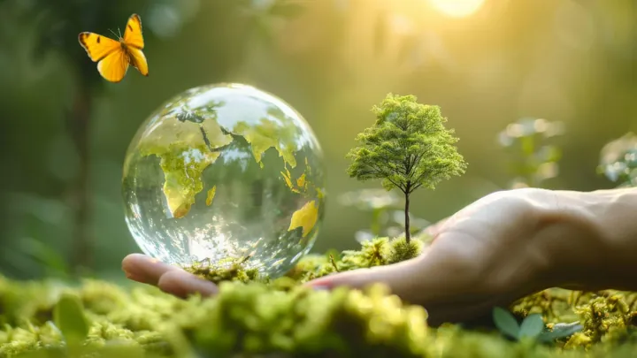

da mer 28 ott a sab 31 ott
Festival dell'ambiente aspettando "San Matteo"
Torna a Feltre il Festival dell’Ambiente “Aspettando San Matteo”, il percorso di divulgazione scientifica e sensibilizzazione ambientale promosso dal Comune di Feltre in collaborazione con il Parco Nazionale delle Dolomiti Bellunesi.
 Indicazioni
Indicazioni
- Costi e prenotazioni
- Costo non indicato · Prenotazione non indicata
- Programma
- Programma da verificare. Apri la fonte ufficiale per orari e possibili aggiornamenti.
- In caso di maltempo
- Nessuna indicazione specifica pubblicata.
- Note
- Acquisito automaticamente dalla fonte.
L’EVENTO
Descrizione completa
Torna a Feltre il Festival dell’Ambiente “Aspettando San Matteo”, il percorso di divulgazione scientifica e sensibilizzazione ambientale promosso dal Comune di Feltre in collaborazione con il Parco Nazionale delle Dolomiti Bellunesi.
L’edizione 2026 propone tre appuntamenti dedicati al rapporto tra essere umano e ambiente, attraverso linguaggi e prospettive diverse: dal teatro alla divulgazione scientifica, fino all’approfondimento sulla biodiversità e sul ruolo degli impollinatori.
L’obiettivo è offrire alla cittadinanza occasioni di conoscenza, confronto e riflessione su alcune delle principali sfide ambientali del nostro tempo, con il contributo di esperti e divulgatori di rilievo nazionale e di qualificate realtà del territorio.
Il primo appuntamento è in programma mercoledì al Teatro de la Sena, con lo spettacolo “Chi ha ucciso il pianeta?”, scritto da Mario Tozzi, Lorenzo Baglioni e Michele Baglioni, con Mario Tozzi e Lorenzo Baglioni e la voce narrante di Carlo Lucarelli. “Il costo biologico della crisi ambientale”
Sarà poi la volta, sempre al Teatro de la Sena, della scienziata e divulgatrice Antonella Viola, che dialogherà con Nicola Maccagnan sul tema “Il costo biologico della crisi ambientale”.
Il Festival si concluderà sabato nella sede del Museo Diocesano, con la conferenza “Non solo api. Biodiversità e importanza degli impollinatori ”, a cura del Parco Nazionale delle Dolomiti Bellunesi, in collaborazione con Unifarco Laboratori.
IL PROGRAMMA
Programma e orari
Appuntamenti raccolti dalle fonti elencate. Dove manca un orario, non è ancora disponibile in questa scheda.
Programma pubblicato
- 2026-10-28 — 2026-10-28 · 20:30:00
- 2026-10-31 — 2026-10-31 · 18:00:00
- 2026-10-30 — 2026-10-30 · 20:30:00
INFORMAZIONI UTILI
Prima di partire
- Controllare la fonte prima di partire.
ORGANIZZAZIONE